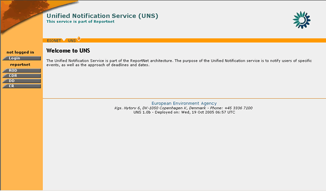
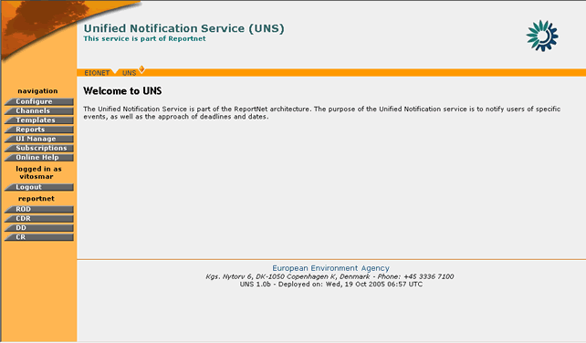

In UNS, users may log in the application in order to change their Notification Profile and subscription parameters. Administrators have additional privileges in terms of managing application parameters and defining new content feeds (See: UNS Administration). UNS XML-RPC users may login in the application in order to create new PUSH channels and to get list of PUSH channels they may access to.
Before performing any actions on UNS, you must authenticate yourself to the system as follows:

Figure 2: UNS Welcome Page
After a successful login, the navigation bar is refreshed with the operations corresponding to the profile of the user signed-in.

Figure 3: UNS Administrator welcome page
In order to logout, the user must select the “Logout” button on the navigation menu. By clicking on this button, the user will be disconnected from the application and the navigation menu will be reduced to the one shown in Figure 2: UNS Welcome Page